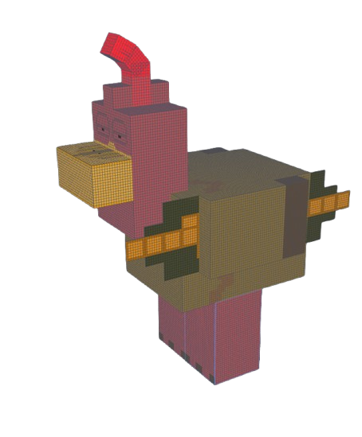

Além disso, o mod inclui:
- Modelos 3D personalizados criados usando ferramentas como Blockbench.
- Texturas de alguns times de futebol e jogadores.
- Icones e itens personalizados como o Zap Zap Item
- Planos para adicionar novas mecânicas e interações baseadas em memes conhecidos.
Este projeto é um laboratório criativo para explorar desenvolvimento em Java, modelagem 3D e integração com Minecraft.
Ainda não fiz muitas coisas da minha vida